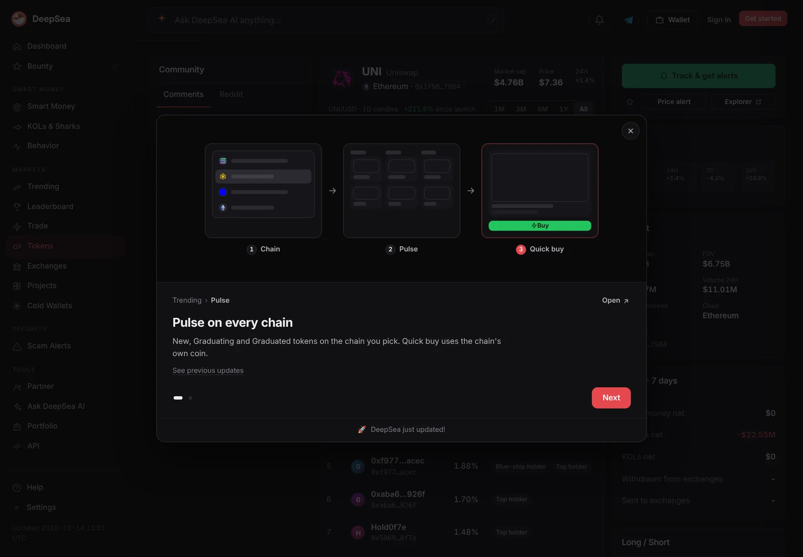
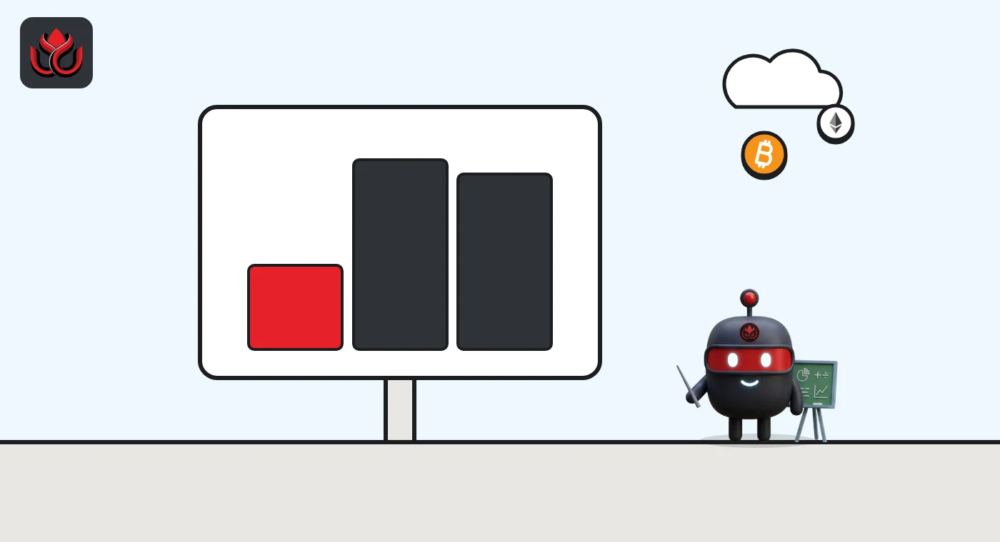

FDV vs market cap: how to read a token's supply, with HYPE's 4x gap as a guide
Market cap is price times the tokens circulating today. Fully diluted valuation (FDV) is price times the whole supply, including locked tokens. The gap between them shows how much supply is still to come.
Key points
- Market cap is price times circulating supply. FDV is price times total (or maximum) supply.
- A market cap to FDV ratio near 1 means most tokens already circulate. A low ratio means a lot of supply is still locked.
- Data sites calculate FDV differently, so the same token can show different FDVs on the same day.
- Neither number is a price target. Both assume today's price, and FDV ignores demand.
 What DeepSea's data shows
What DeepSea's data shows
DeepSea's token pages show market cap and FDV side by side. On November 2, PUMP had a market cap of $1.90 billion against an FDV of $4.58 billion, so the circulating tokens made up only about 41% of the fully diluted value.
Check FDV figures against the maximum supply before you rely on them. For some large tokens, including UNI and AAVE, DeepSea's FDV on November 2 came out higher than price times maximum supply, so we do not quote those numbers here. Like CoinGecko and Tokenomist, DeepSea builds FDV from its own supply data, and that data can differ from other sites.

Data: DeepSea (desea.io), checked November 2, 2026, 7:58 a.m. ET.
What is market cap in crypto?
Market cap is the token's price multiplied by its circulating supply, the tokens actually on the market. CoinGecko's FDV guide gives the formula as price times circulating supply and says it reflects present value.
The tricky part is deciding what counts as circulating. CoinMarketCap's supply rules call circulating supply its best approximation and exclude locked tokens, team, foundation and treasury holdings, private sale tokens, unused ecosystem and marketing reserves, and assets that cannot be sold on the public market.
What is fully diluted valuation (FDV)?
FDV is what the token would be worth at today's price if every token were already in circulation. CoinGecko and CoinMarketCap both define it as total supply times current price. Total supply counts tokens that exist now, including locked ones, minus any verifiably burned.
Tokenomist uses a different input. Its FDV uses the maximum supply, and for tokens with no cap, such as ETH, it uses a projection of supply in the year 2035. Both methods assume the current price stays fixed.

How is FDV different from market cap? A real example
Hyperliquid's HYPE shows both numbers, and the method gap. As of November 2, 2026, CoinGecko's HYPE page showed a price of about $86.87, a circulating supply of about 239.4 million, total supply of about 951.5 million and a 1 billion maximum. That gives a market cap of about $20.80 billion and an FDV of about $82.65 billion.
Tokenomist's HYPE page uses the full 1 billion maximum supply instead. At CoinGecko's price of $86.87, that method gives an FDV of about $86.87 billion. Tokenomist's own dollar figure moves with its own price feed, so it will not match CoinGecko's exactly at any given moment. Neither method is wrong. They answer different questions.
A smaller token tells the same story at a different scale. CoinGecko's Sophon page showed SOPH at about $0.001678, with a market cap of about $8.72 million and an FDV of about $16.78 million, since about 5.2 billion of its 10 billion tokens circulate.
HYPE: market cap vs two FDV methods, November 2, 2026
US$ billion
Sources: CoinGecko, HYPE and Tokenomist, HYPE, both checked November 2, 2026. Figures move with price.
What does the market cap to FDV ratio tell you?
Divide market cap by FDV and you get the share of supply already circulating. CoinGecko shows this ratio and says a value closer to 1 means more of the supply is out. Tokenomist's guide to the ratio says a reading below 0.3 means over 70% of supply is still locked, while tokens above 80% released face little future dilution.
Using CoinGecko's figures, HYPE's ratio was about 0.25 and SOPH's about 0.52 on November 2, 2026. Tokenomist's FDV glossary also cites launch examples: about 625 million ARB circulated against a 10 billion maximum, a gap of roughly 16 times, and Optimism's FDV to market cap gap shrank from about 7 times at launch to about 3 times as more tokens entered the market.
A low ratio is a warning about supply, not a verdict on price. Tokenomist says big gaps do not guarantee a price drop, since strong demand can absorb new tokens, but the gap shows how much supply that demand will have to absorb. For tokens like ETH, where burns remove coins, Tokenomist also uses an adjusted market cap based on adjusted released supply.
How do you read tokenomics with these numbers?
- Check the ratio first. A low ratio means the price is set by a small float, with more supply waiting.
- Look at who holds the locked part. Team and investor tokens behave differently from a community treasury.
- Read the schedule. A cliff unlock can release a big tranche at once. Linear vesting spreads it out. LC Insight's token unlocks guide covers this in more detail.
- Check burns and emissions. CoinGecko notes that minting and vesting increase supply, and burns reduce it.
- Compare sources. If two sites show different supplies, find out which one counts locked or burned tokens.
LC Insight applied this kind of reading to Ritual, which launched with 82% of its token locked.
How do burns, emissions and supply caps change the math?
FDV depends on a supply number, and that number can move. CoinMarketCap's tokenomics guide gives three cases, with figures dated October 7, 2026:
- Hard cap. Bitcoin had 20,094,665 coins circulating of a 21 million maximum, so market cap and FDV are close.
- No cap. Dogecoin had about 156.2 billion DOGE circulating with no maximum supply, so new coins keep being issued and a max-supply FDV cannot be calculated.
- Burns. BNB's maximum supply now sits below its original ceiling because repeated burns removed tokens.
Burns cut the FDV denominator directly. Lisk's token FAQ says a one-time burn of 100 million LSK, in progress, will take total supply from 400 million to 300 million, so at the same price LSK's FDV would fall by a quarter.
How a token was first sold matters too. CoinMarketCap's FDV article says Binance offered 60% of BNB's supply in 2017, split between angel investors and its ICO, and Ethereum sold over 60 million ETH in 2014, more than 80% of its initial circulating supply. Large early sales like these left less supply locked for later.
What are the limits of FDV?
FDV is an estimate. CoinGecko says it may have a wide error margin and ignores demand. It assumes all tokens would be worth today's price, which a small float cannot prove. Some tokens show no FDV at all on CoinGecko because they have no maximum supply. CoinMarketCap's FDV article also points out that early investors can end up below their sale prices once vesting ends, when many tokens have entered the market.
Market cap has limits too. It relies on a circulating supply estimate, and two data sites can count it differently. Treat both figures as a map of supply, not a forecast of price.
CoinMarketCap's FDV article gives two cautionary cases without dates: DoragonLand sold 16.5% of its supply in sale rounds, yet heavy inflation left its DOR token 95% below its all-time high, and aggressive unlocks pushed Tryhards below its IDO, private and strategic sale prices. Tokenomist adds that Polygon's FDV to market cap ratio stayed high through 2023 and 2024 while large allocations vested, and that the premium compressed as vesting progressed.
LC Insight analysis
This section is our reading of the facts above, not a statement of fact.
- We think the market cap to FDV ratio is the fastest single check of a token's supply risk. It does not say what the price will do, but it shows how much new supply buyers will have to absorb.
- Different FDV methods are a real source of confusion. Before comparing two tokens, make sure both numbers come from the same site and the same supply definition.
- Circulating supply is an editorial judgment by data providers, not a fixed fact. Large gaps between trackers are a sign to read the project's own token page.
What's next
- How HYPE's ratio changes as Core Contributor tokens unlock
- Data providers revising circulating supply for new tokens
- New launches with less than 20% of supply circulating
Frequently asked questions
Is a high FDV bad?
Not by itself. A high FDV next to a low market cap means many tokens are still locked, which can mean future selling pressure, but demand can also absorb new supply.
Why does CoinGecko show a different FDV from other sites?
CoinGecko and CoinMarketCap calculate FDV from total supply, while Tokenomist uses maximum supply or a 2035 projection. Prices are also sampled at different times.
When are market cap and FDV the same?
When every token is already circulating and tradable, CoinGecko says the two figures are equal.
Does a low market cap mean a token is cheap?
No. Market cap only counts circulating tokens. A token with a small market cap but a large FDV has much more supply still to come.
Disclaimer. This article is based on public information and the sources listed below as of the update time shown. It is for information only and is not investment, legal or tax advice. Figures may change as companies and authorities publish new data.
Sources
- CoinGecko Learn, What Is Fully Diluted Valuation (FDV) In Crypto?
- CoinMarketCap Academy, Fully Diluted Valuation (FDV): The Great Dilution Dilemma
- CoinMarketCap Support, Supply (Circulating, Total, Max)
- Tokenomist, Market Cap vs FDV
- CoinGecko, Hyperliquid (HYPE) (checked November 2, 2026)
- CoinGecko, Sophon (SOPH) (checked November 2, 2026)
- Tokenomist, Hyperliquid (HYPE) (checked November 2, 2026)